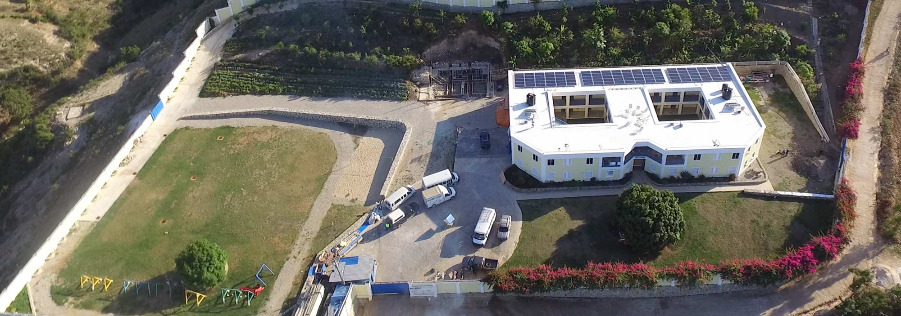

Britney Gengel was a beautiful, fearless and compassionate 19 year old when she decided to travel to the country of Haiti with her college, Lynn University. Upon her arrival, Britney was overwhelmed by the devastating poverty visible everywhere. Despite their living conditions, the children she met gave her so much love she was inspired to send the following text to her mother just three hours before the earthquake:
"They love us so much and everyone is so happy. They love what they have and they work so hard to get nowhere, yet they are all so appreciative. I want to move here and start an orphanage myself."
Britney Gengel, 1990 - 2010
Shortly after sending the text, a catastrophic 7.0 magnitude earthquake struck Haiti, killing an estimated 300,000 people, including Britney. Her family could not let her die in vain. In loving memory they started the Be Like Brit Foundation, Inc. During the course of two years, a 19,000 square foot earthquake-proof, non-adoptive orphanage was built in Grand Goave, Haiti — the town where Brit was supposed to travel to the day after the earthquake.
Today we have 33 girls and 33 boys living and thriving at Brit's Home. The number 33 is symbolic of the 33 days Brit was missing in the rubble at The Hotel Montana. The majority of our children are true orphans or came from such horrific conditions that we couldn't say no. Our mission is to raise the next generation of leaders in Haiti.